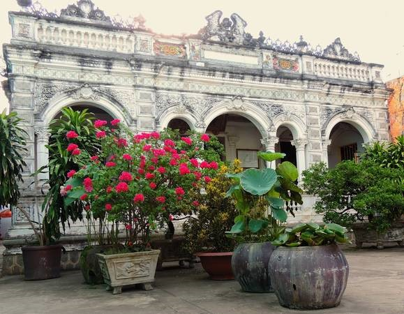
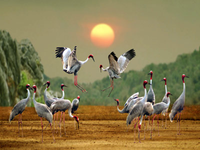

1.黄水黎の家 – Huỳnh Thủy Lê（フイン・トゥイ・レー）
1895年に建設された家屋で、南ベトナムとフランス、中国の建築様式を組み合わせたユニークな設計です。
家の中のすべてのアイテムは100年以上前のものです。
住所：255A Nguyen Hue Street、Ward 4、Sa Dec、Dong Thap
時間：7:00～17:00
入場料：15,000～25,000 VND

2.花栽培の村 – Sa Déc（サデック)
ドンタップ省のSa Đéc（サデック）村は、花や観葉植物の栽培が有名で、100年以上前からの歴史があります.
Sa Đéc村の生花は、メコンデルタ、ホーチミン市、中央省、カンボジアの市場に供給されています。
サデック村は南部で最も大きな花栽培の村です。旧正月テトを間近に控えて、現在、花を栽培している南部ドンタップ( Dong Thap) 省サデック ( Sa Dec) 村は今、テトの花の準備を急いでいます。一年中花が咲くこのサデック村は長年にわたり、魅力的な観光地となってきました。ここを訪れる観光客は各種の花を観賞できる他、花の香りを味わいながら、花栽培農家と共に、花を採りに行くことができます。

3.トラムチム国立公園（Tràm Chim National Park）
タンチョウは希少で美しいため,トラムチム国立公園では天然記念物に指定されています。
非常に豊かな生態系に加え、美しい自然の景観があります。保護されている貴重な動植物が生息しているので、見たことのない種類の動植物を見ることができるでしょう。特に鳥はベトナム全土の四分の一にあたる約200種が生息しており、長期にわたって絶滅を危惧されている種類の鳥も生息しています。 自然の美術館として、そしてエコツーリズムのスポットとして活性させるべく、国をあげて保護しているほか、国際的にも各地の保護団体が美しく貴重な自然の保護を支援しています。
